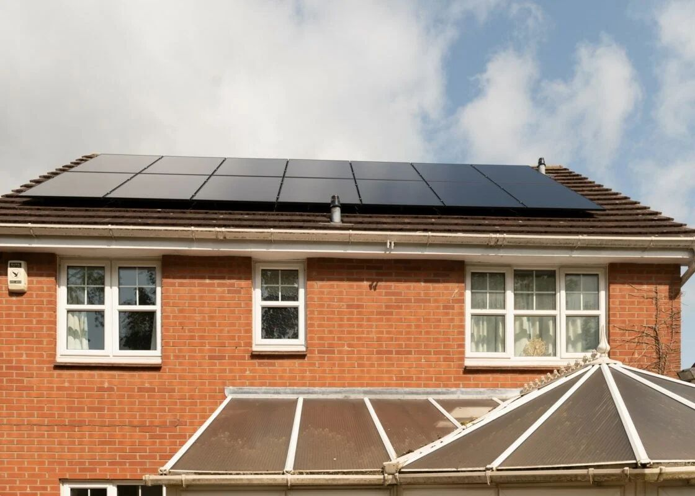
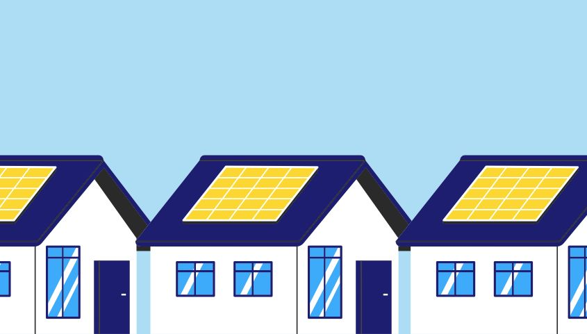

2025
16 February 2025 Tech.eu GRYD Energy secures £1M Pre-Seed for solar hardware subscription GRYD has developed a UK-first subscription model that allows developers and homeowners to install solar without ever paying for the hardware. Read the article 12 February 2025
Sustainable Times
GRYD Secures £1M to Unlock UK’s Residential Solar Potential
UK-based solartech startup GRYD Energy has secured £1 million in Pre-Seed funding to accelerate its national expansion. It offers a unique subscription-based approach that removes the high upfront solar installation costs for developers and homeowners.
Read the article
12 February 2025
Sustainable Times
GRYD Secures £1M to Unlock UK’s Residential Solar Potential
UK-based solartech startup GRYD Energy has secured £1 million in Pre-Seed funding to accelerate its national expansion. It offers a unique subscription-based approach that removes the high upfront solar installation costs for developers and homeowners.
Read the article
2024
29 October 2024 Cornish Times Zero cost solar pilot launches in St Ives to unlock clean energy for millions of homes The project, deployed by solar tech company GRYD Energy in partnership with BK Developments, is the first in the UK to test smart solar and battery storage systems for new-build homes that carry zero upfront cost burden for the developer or homeowner. Read the article
26 October 2024 Current News Housing Ministry refutes claims the Future Homes Standard will be weakened CEO and co-founder of residential solar firm GRYD, Mohamed Gaafar, said: “The new government’s green growth agenda cannot be realised without an unapologetic commitment to the Future Homes Standard. This will give the property sector the clarity and stability it needs… Read the article 24 October 2024 BDC Magazine Residential solar CEO reacts to Labour uncertainty on Future Homes Standard Mohamed Gaafar, CEO and Co-Founder of GRYD Energy: “The time has come for the new government to take a firm stance on the FHS and commit to making the country’s housing fit for the future. The FHS is a crucial piece of legislation that will raise the environmental standards of new homes and ensure the housing sector’s energy supply is more resilient, affordable and sustainable for all. Read the article
17 October 2024 Solar Energy UK Solar Energy UK Case Study – GRYD Energy In a first-of-its-kind deployment, GRYD Energy delivered zero-cost smart solar systems for 3 new homes at a site in St. Ives, Cornwall. Working with new build property developers, GRYD funds the smart solar hardware on all new homes, including PV and batteries; saving developers up to £10k in hardware costs per home – while exceeding their obligations under building regulations Part L and the upcoming Future Homes Standard. Read the case study 17 July 2024 Tech Funding News Tech Talks with TFN at Antler European Founder Conference: Mohamed Gaafar (GRYD Energy) Tech Funding News interviews Mohamed Gaafar of GRYD Energy at Antler’s 2024 European Founder’s Conference, discussing renewable energy, how startups can tackle the climate crisis, and the challenges one faces as a first-time diverse founder in the European landscape. Watch the interview
17 April 2024
Unlock Net Zero
Congratulations to the 2024 finalists!
Congratulations to the 2024 finalists!
GRYD secures place on shortlist at the Net Zero Awards for technology innovation of the year.
See the shortlist
4 April 2024
Property Week
AI will drive evolution of property
GRYD Energy is deploying smart solar systems that use AI to intelligently
optimise the distributed energy resources for homes and provide critical flexibility and demand-side response services to the local grid.
Read the article
Writing about funded solar? Talk to our press desk.
We publish our own data on rooftop solar uptake, council deployment and new build compliance, and we can put you in front of the people who run the sites.
press@gryd.energy